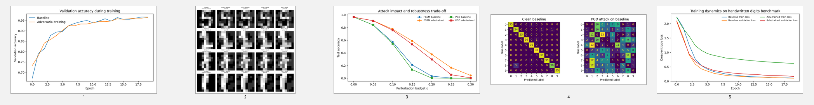
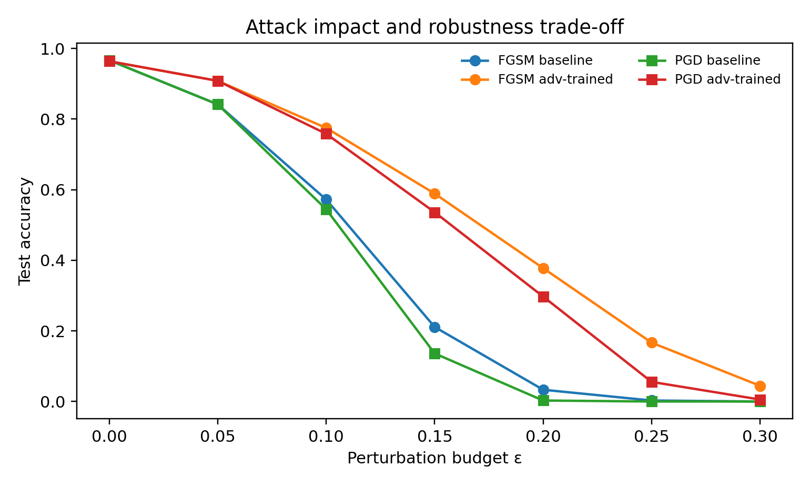

Clean baseline
96.67%
Strong natural accuracy

Clean baseline
Strong natural accuracy
Baseline under PGD
Near-total collapse
PGD after defense
Material robustness recovery
PGD gain
Defense benefit
Interactive selector
Comparison
Visual evidence

Key findings
Reproducibility
This dashboard separates executed local evidence from planned benchmark extensions. That keeps the project honest, academically clean, and easy to defend.